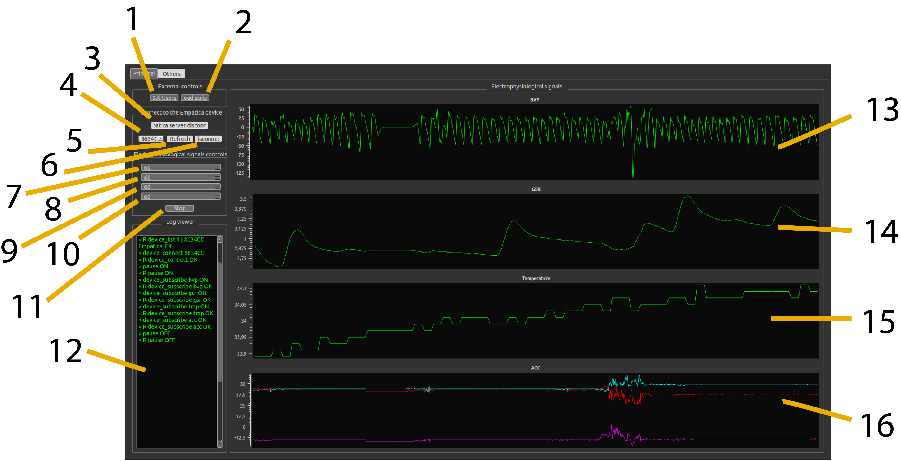

Signals need experimental context
A physiological trace becomes more useful when it can be related to what happened during an experiment. BIOSIGNALS brings live acquisition, visualisation and event labels into the same workflow.
I developed the software for experiments using BVP, GSR, temperature and accelerometer signals.

Acquisition and experiment control
- 01AcquirePhysiological streams from the device interface
- 02Buffer & displayChannel data managers and live traces
- 03LabelExperiment events attached to the recording
- 04StoreSignal data and markers for offline analysis
The trigger interface lets an experiment communicate with the recorder without driving the GUI. The application handles the recording state, while data managers buffer channels and store annotations.
Trade-off: separating those components makes integration possible, but timing and state transitions need validation under the actual acquisition conditions.
A small protocol with a useful boundary
The repository documents start and stop commands plus asynchronous event labels. In the inspected data manager, an annotation time is calculated from the sample index and configured sampling rate, then stored with the signal data.
Sample-based annotations and stored data ↗
The repository includes an EDF writer, while the inspected data-manager variant stores NumPy files containing data, sampling information and triggers. Recording format therefore depends on the version and entry point.
Source, use and limits
This is experimental research software. The screenshot and source make the workflow inspectable; they do not establish a measured latency or synchronisation guarantee. The current checkout was reviewed without connecting acquisition hardware or running an experiment.
A useful next validation would compare event timestamps against an external reference while testing recording start, stop and reconnect behaviour.
- Recording state and trigger handling ↗How experiment events reach the data managers.
- EDF export component ↗An alternative recording component included in the repository.
- Source and documented usage ↗Code reference: 821d3dd. Hardware and dependencies are required.
- Software citation ↗Persistent reference for the research software.
- Related research: multimodal emotion estimation ↗International Journal of Neural Systems, 2020.